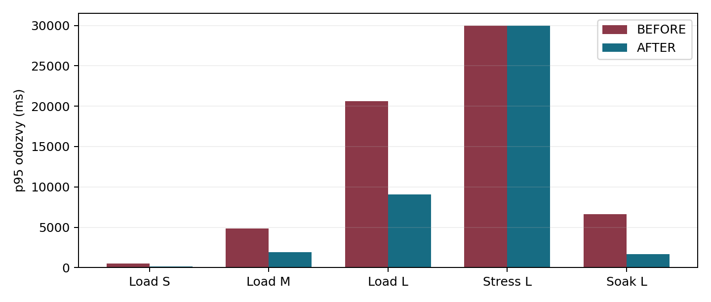
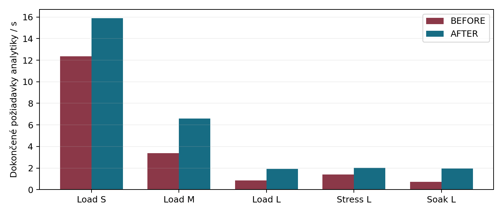
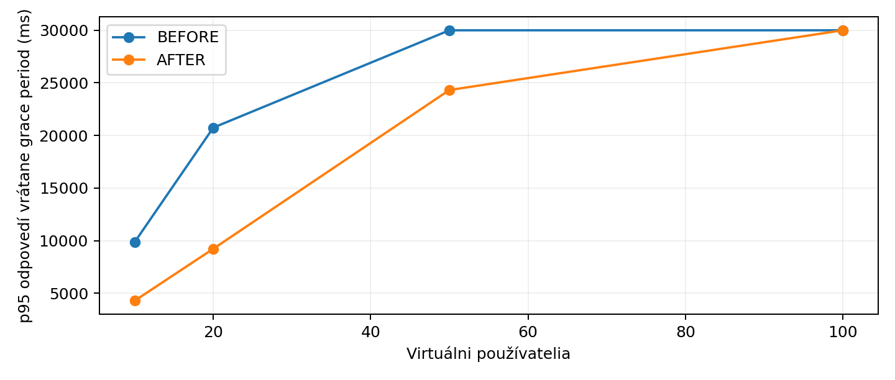

Mykhailo Adamenko · 2. 10. 2026. Skutočné lokálne výsledky; jeden PHP worker, SQLite. Chybovosť je z dokončených volaní, prerušené iterácie sú uvedené osobitne.
| Stav | Test | p95 ms | RPS | Chyby % | Prerušené iterácie |
|---|---|---|---|---|---|
| before | load-1 | 512.88 | 12.368 | 0.00 | 0 |
| before | load-2 | 4873.62 | 3.381 | 0.00 | 0 |
| before | load-3 | 20595.48 | 0.853 | 0.00 | 11 |
| before | stress-3 | 30000.34 | 1.404 | 58.93 | 29 |
| before | soak-3 | 6596.22 | 0.715 | 0.00 | 0 |
| after | load-1 | 147.52 | 15.907 | 0.00 | 0 |
| after | load-2 | 1935.40 | 6.582 | 0.00 | 0 |
| after | load-3 | 9068.84 | 1.919 | 0.00 | 0 |
| after | stress-3 | 29999.89 | 2.006 | 21.36 | 59 |
| after | soak-3 | 1689.91 | 1.968 | 0.00 | 0 |



PR-01 a PR-02 nesplnené. PR-03 BEFORE nepreukázaná pre prerušenia, AFTER splnená. PR-04 iba skrátený soak; PR-05 splnená. Podrobnosti: PDF.